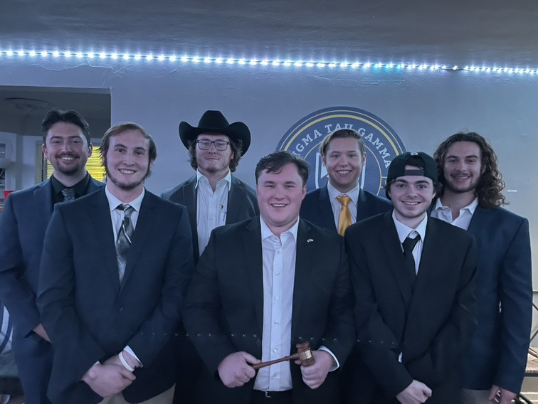

About Me!
My goal is to show my talents as a game designer while still showing my ability to learn from experiences. Making assets and games may be difficult but no matter how many we make, there is always something to learn from all of them.


Achievements
In addition to being a game design student, I have been a prominent member of my fraternity, Sigma Tau Gamma. My previous job within the fraternity was as Head New Member educator in which I was tasked with helping our new members be acquainted with our structure and brotherhood.
Our organization was awarded "Chapter of the Year" at Michigan State University this year for showing an outstanding performance in philanthropy, leadership, and brotherhood. I was recently elected to the Executive Board for the position, Director of Education & Wellness.
During my time on Executive Board, I plan on helping my brothers by promoting mental health resources as well as facilitating a prosperous learning environment by offering academic resources.
Education
I currently attend Michigan State University located in East Lansing, Michigan. My current major is in Games and Interactive Media. I hope to find a job in the game design field once I graduate in 2023. My dream job would be either level design or creative design within a semi-large gaming company.